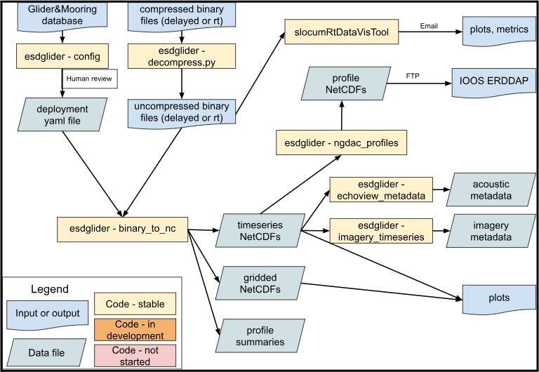
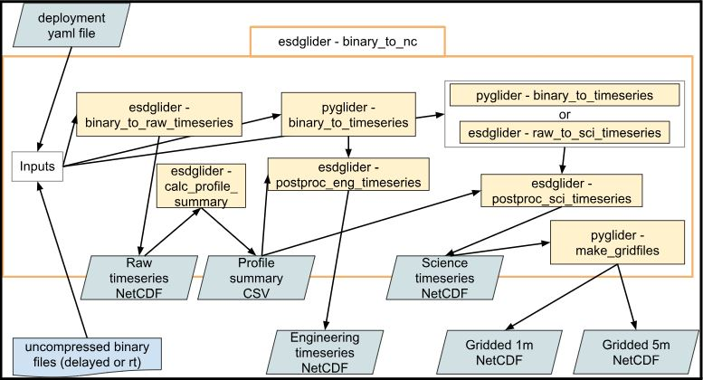

Slocum Glider Data
There are many steps and flavors to Slocum glider data processing (hereafter ‘glider data processing’), from the base processing of binary files to NetCDF for Slocum gliders, to QA/QC, to developing additional data products. This page outlines the ESD glider lab’s data processing workflow, in particular around base processing and data products.
Users interested in understanding and accessing data products created for each deployment should see the Data Products section. For acoustic or image processing workflows, see the acoustics and imagery pages, respectively.
Background
Historically, the ESD glider team processed glider data using the Matlab toolbox SOCIB. However, this toolbox is not actively maintained, and the majority of ESD processing efforts have moved to Google Cloud (GCP), an environment where Matlab is difficult to run. Subsequent efforts involved developing amlr-gliders, a Python toolbox and scripts that were primarily wrappers around gdm. These efforts never caught full traction.
Currently, the ESD glider lab uses the esdglider Python toolbox and scripts to do its base glider data processing. esdglider primarily consists of ESD-specific wrappers around existing toolboxes such as PyGlider, GliderTools, and dbdreader. All efforts are geared towards processing ESD glider data in ESD’s Google Cloud project, using an Open Science approach.
Terminology
Common terminology used in glider data processing:
- glider-YYYYmmdd: The deployment name, which follows the convention of {glider name} - {date as year month day}. For instance, “amlr01-20181201” indicates the deployment of glider amlr01, deployed on 1 December 2018.
- mode: the mode of glider data acquisition, either real-time (‘rt’) or delayed-mode (‘delayed’). The delayed data is the full resolution dataset, which can be downloaded from the glider only after the glider has been recovered. The rt data is a subset of the full-resolution data from the delayed mode, that has been transmitted via Iridium while the glider is deployed.
- Profile, and other sampling terminology
- NetCDF
- inflection: when a glider is transitioning from a dive to a climb, or from a climb to a dive
- OG1.0 controlled vocabulary (also see OG1.0 background)
Base Processing
The base glider data processing, also referred to as “Level 1” or “L1” processing, is primarily done using PyGlider, hereafter simply pyglider. pyglider creates CF-compliant timeseries and gridded NetCDF files, which can be both used internally in further workflows, as well as made publicly available through an ERDDAP (e.g., via the IOOS Glider DAC).
These base processing details apply to both real-time and delayed-mode data.
Overview
The current high-level workflow is shown below. For more in-the-weeds details, see the relevant sections below. See data products for a description of the output files.

- Enter all glider build and deployment info in the database, and upload all deployment files as specified on the data management page
- Create a deployment YAML file
- Create a deployment-specific processing script, and run it in a GCP Workbench Instance top create data products
- Access processed NetCDF files via GCP for additional internal workflows
- (in development) serve/archive data with IOOS/NCEI
binary_to_nc
The binary_to_nc function is the workhorse of the esdglider base processing for Slocum gliders. This function is described in-depth in the Timeseries and Gridded sections.

binary_to_nc inputs, outputs, and top-level helper functionsdeployment YAML files
Like pyglider, esdglider relies on deployment YAML files (i.e., deployment configs) for all metadata related to a glider deployment. These files contain information such as metadata required by IOOS, what devices were on the glider and when they were last calibrated, and the data (i.e., sensor names) to extract from the binary data. See the pyglider docs for more details about the deployment YAML file.
To help generate these files, esdglider includes the script generate-deployment_yaml.py, which can be run locally (i.e., wherever it can access the database) to create a first draft deployment YAML file. This script scrapes all instrument information from the Glider Database, and adds standard metadata. A user needs to then edit this file by hand, in particular the people, devices, comment, and summary blocks. The individual metadata blocks are documented here. Deployment YAMLs for all ESD glider deployments are stored in the glider-lab repo.
deployment processing scripts
All base processing is performed by deployment-specific Python processing scripts, which can also be found in the glider-lab repo. These scripts create NetCDF files, acoustic and/or imagery data products (if necessary), and standard plots. A template script ‘glider-YYYYmmdd-template.py’ can be found in the same glider-lab repo folder. To start a new script, users should 1) make a copy of the template and rename it for the desired deployment, 2) update the “deployment_name” and “mode” variables at the top of the file, and 3) uncomment base processing sections that are relevant for that deployment.
Deployment scripts are designed to be run in Google Cloud, so that they are able to access data stored in the GCS buckets. Currently, they are all run in the ‘glider-proc’ GCP Workbench Instance.
Data Products
The esdglider toolbox heavily leverages dbdreader and pyglider to create several different ‘L1’ base processing data products, which are described in this section. For descriptions of the various standard plots, see the Plots section. See the individual base processing sections for specific processing steps, choices, etc.
All output files begin with the deployment name ({glider-YYYYmmdd}), and include the data processing ‘mode’ (i.e., delayed or rt). The timeseries data products are all NetCDF files with a single coordinate “time”. The gridded data products are all NetCDF files with two coordinates: “depth” and “profile” (i.e., profile_index). An exception is the ‘profiles’ CSV, which contains the start/end times, depths, and other info for each profile.
Standard data products:
science timeseries: {glider-YYYYmmdd}-{mode}-sci.nc: The ‘science’ timeseries. Most users will want this dataset, as it contains the values from all of the various science sensors. Functionally speaking, this timeseries has one ‘row’ of data for each timestamp from the glider’s science computer with valid science sensor data. See eng/sci for more details, as well processing notes for specific data post-processing steps.
science gridded 5m: {glider-YYYYmmdd}_grid-{mode}-5m.nc: The science timeseries, gridded into five meter bins. This NetCDF file will include all of the science sensor values that were in the science timeseries. Users should note that the depth bin name is the bin midpoint. For instance, the bin for data from zero to five meters has the name/label “2.5”.
images+science timeseries: {glider-YYYYmmdd}-imagery-metadata.csv: A CSV file with one row for each image, and one column for each sensor value. The sensor values from the science timeseries are interpolated to each image timestamp. This file is only created if the glider is carrying a camera, such as a shadowgraph or glidercam, and lives in the raw glider imagery bucket (e.g. here)
Additional data products:
raw timeseries: {glider-YYYYmmdd}-{mode}-raw.nc: The ‘raw’ timeseries is the raw data, simply read from the binary data files and saved as a NetCDF (no interpolation). It contains all timestamp from the glider’s flight or science computer with at least one valid sensor value. No interpolation is done for any sensor values. These two features make this dataset useful for a) calculating profiles and b) troubleshooting any sensor values or processing steps.
engineering timeseries: {glider-YYYYmmdd}-{mode}-eng.nc: The ‘engineering’ timeseries. Functionally speaking, this timeseries has one ‘row’ of data for each timestamp from the glider’s flight computer with valid engineering sensor data. See eng/sci for more details, as well processing notes for specific data post-processing steps.
profile summary: {glider-YYYYmmdd}-{mode}-profiles.csv: A CSV file with one row for each profile, containing information such as: profile index, profile start and end time, profile start and end depth, profile phase, and length of profile in seconds. Note that this file contains “#.5” profiles, which mark the times between profiles when the glider is at the surface or inflecting.
science gridded 1m: {glider-YYYYmmdd}_grid-{mode}-1m.nc: The science timeseries, gridded into one meter bins. This NetCDF file will include all of the science sensor values that were in the science timeseries. Like for the 5m gridded dataset, users should note that the depth bin name is the bin midpoint. For instance, the bin for data from zero to one meter has the name/label “0.5”.
acoustic metadata files: Files needed for processing acoustic data with Echoview. See the active acoustics page for more details. These files, which live in the glider active acoustics bucket (e.g. here), are only created if the glider is carrying an active acoustic instrument, such as a Nortek or AZFP
Timeseries
This section describes in-the-weeds details of and choices choices made by the code when using the binary slocum glider files to generate timeseries files. See data products for a description of the timeseries output files.
The pyglider.slocum.binary_to_timeseries function uses dbdreader to read Slocum glider data from binary files. More discussion can be found here around why pyglider switched to using dbdreader, and how pyglider processing worked before. Many pyglider functions, including binary_to_timeseries, rely on a deployment yaml configuration file for e.g. metadata and mapping sensor names to NetCDF variable names.
As constructed, binary_to_timeseries uses dbdreader.get_sync to extract values for all of the specified sensors. Specifically, the user specifies a particular sensor to server as the ‘time base’, and then all other desired variables (across science and engineering) are interpolated onto the relevant timestamps. The ‘relevant’ timestamps are where this ‘time base’ variable has a valid (i.e., not missing or nan) value. Comprehensive interpolation always happens for the engineering variables; however, no interpolation is done for the science variables if the gap between time points is greater than or equal to ‘maxgap’ seconds. This avoids interpolation over large gaps in the data, for instance when a sensor malfunctioned or was turned off. Within ESD, we use a maxgap of 60 seconds. These maxgap principles apply across all of the esdglider timeseries.
Raw
There is no way to use binary_to_timeseries to generate the raw timeseries, meaning a timeseries with uninterpolated data. For this, we use the esdglider function binary_to_raw_timeseries. This function follows the same general logic as pyglider’s binary_to_timeseries, except that it uses the dbdreader function get, with return_nans=True, to extract all valid timestamps across the specified variables. In practice, this means that all valid timestamps are extracted for both the engineering variables (from the flight computer’s “m_present_time”) and the science variables (from the science computer’s “sci_m_present_time”). These timestamp arrays are merged, and the merged array becomes the time index of the raw timeseries NetCDF file.
This dataset contains both the measured depth (“depth_measured”) and the depth calculated from the CTD pressure sensor (“depth_ctd”). No values are interpolated. Invalid timestamps are still dropped, as well as timestamps that either a) invalid (i.e., they have no non-nan sensor values), and b) came before the “deployment_min_dt” metadata attribute in the deployment.yaml file. Values that are calculated and included in the raw dataset include “depth_ctd” and “distance_over_ground”: the great-circle distance between each measured lat/lon.
The raw timeseries contains all glider data points, except for those dropped as specified above, and is thus particularly useful for debugging code or sensor behavior. It is also used to calculate profiles. Profiles can be tricksy to calculate, as sometimes the glider stalls in the water or otherwise has a moment that causes it to deviate from its current dive or climb. To robustly find profiles in the timeseries, esdglider uses the raw glider measured depth (from the glider’s pressure transducer) and the findProfiles function from the PGPT toolbox. findProfiles is a Pythonic reproduction of a function of the same name from the SOCIB toolbox. Summary information about the profiles can be found in the profile summary CSV.
Eng + Sci
After generating the raw timeseries, the typical ESD workflow is to use pyglider‘s binary_to_timeseries to create an ’engineering’ timeseries with the glider measured depth (sensor name “m_depth”) as the time base, and a ‘science’ timeseries with the pressure from the CTD (sensor name “sci_water_pressure”) as the time base. The engineering timeseries is always created this way. However, for the science timeseries, this system is predicated on the CTD being turned on and sampling at all times during a deployment. If the CTD is turned off, then there will be no pressure values, and get_sync will not return some timestamps that have non-nan values for another instrument. For these deployments, esdglider includes the function raw_to_sci_timeseries. This function reads in the raw timeseries, and performs the maxgap interpolation for timestamps that have a non-nan value for any of the science sensors. raw_to_sci_timeseries can be used in cases where different science sensors are on at different times, such as PAM deployments, and thus it is not possible to get the full science timeseries using get_sync.
Usually, the engineering and science timeseries each contain a single “depth” data variable. For the engineering timeseries, the “depth” value in this timeseries is from m_depth, meaning the measured depth from the glider, while the “depth” value for the science timeseries is the depth calculated from the CTD pressure sensor. The variable source is documented in the “depth” variable attributes. For science timeseries that are created via raw_to_sci_timeseries, the glider measured depth is included as the variable “depth_measured”, for timestamps where the CTD was off and thus there is no CTD-derived depth.
Additionally, rather than performing new profile calculations, the profiles calculated from the raw dataset are applied to both the engineering and science timeseries. This is particularly important for the science timeseries, which only contains valid timestamps from the science computer. These timestamps do not necessarily represent the entire deployment. Using the profiles calculated from the raw dataset both uses the best available information for the profile calculations, and keeps the profiles consistent across all of the esdglider timeseries.
Processing Notes
Other timeseries data alterations, or additional features of note:
CDOM data: Sea-Bird Scientific sent an announcement that states that there may be incorrect CDOM values if an ECOPuck instrument was serviced before Jan 13, 2023. These data are in the process of being fixed in the base processing scripts. See this issue for more details, and the latest updates.
esdglider:
- deployment_min_date:
esdgliderrequires users to pass a minimum datetime, which is used to filter all timeseries for data only after this datetime. This value is passed via a “deployment_min_date” key in the deployment YAML file. ESD typically uses the datetime of when the glider begins its first 1k_n.mi mission as the minimum datetime. esdgliderpost-processing steps drop any bogus values from the engineering and science timeseries, meaning it changes these values to nan. Bogus values are defined as:- times before deployment_min_dt, or after the current datetime
- duplicate timestamps, identified by
ds.get_index("time").duplicated() - longitude/latitude values with an absolute value greater than 180/90, respectively.
- sensor values outside of sensor-specific valid ranges. Valid ranges are defined in the
drop_valuesvariable in theesdglider.utilsmodule.
- “distance_over_ground” and relevant global attributes are recalculated, after bogus values and timestamps are dropped.
dbdreader:
dbdreaderthrows a warning if a sensor is turned off and thus not present in some sbd/tbd or dbd/ebd files. See this issue for more discussion.dbdreaderby default skips the first line of each binary file. The reasoning is that “this line contains either nonsense values, or values that were read a long time ago. This behavior can be changed.” See this issue for more discussion.dbdreaderonly identifies sensors as ‘engineering’ or ‘science’. Thus, when extracting any science variable,dbdreaderuses “sci_m_present_time” as the timestamp. For instance, for the data for the sensor “sci_oxy4_oxygen” have “sci_m_present_time” as the timestamp, rather than “sci_oxy4_present_time”.dbdreaderhas functions for decompressing compressed glider binary files. However, it can also read .cd files directly, as long as the cache files are uncompressed.
pyglider.binary_to_timeseries:
- Any values of zero from science sensors are converted to
nan. - Salinity, potential density, density, and potential temperature are calculated using the Gibbs seawater toolbox, as long as temperature, conductivity, and pressure are in the dataset.
Additionally, sometimes a data issue is too deployment-specific to handle in the esdglider base processing. For instance, sometimes a certain depth reading breaks the findProfiles function, or the timeseries contains invalid values from the science computer restarting. In these cases, a code block fixing these data issues is added to the deployment processing script. Another example of this is correcting the CDOM values after a manufacturer error.
Gridded
This section describes in-the-weeds details of and choices made by the code when using the science timeseries to generate gridded datasets. See data products for a description of the gridded output files.
Gridding uses the pyglider.ncprocess.make_gridfiles function. make_gridfiles turns the science timeseries netCDF file into a vertically gridded NetCDF, using binned_statistic to grid data variables. This NetCDF has dimensions of “depth” and “profile” (i.e., “profile_index”). Some variables (e.g., time, lat, and lon) have one dimension (“profile”), while all of the sensor values have both dimensions.
This NetCDF file will include all of the science sensor values that were in the science timeseries. Users should note that the depth bin name is the bin midpoint. For instance, for a five-meter gridded dataset, the bin for data from zero to five meters has the name/label “2.5”.
Plots
Standard plots are generated from either the ‘processed-rt’ (subfolder ‘rt’) or ‘processed-L1’ data (subfolder ‘delayed’). Note that ‘sci’ is short for plots of science sensor values, while ‘eng’ is short for plots of engineering variables. All plots are are grouped by folder:
- TS-sci: Temperature/salinity plots of the various science sensor values
- maps-sci: Maps of surface values (i.e., depth <10m) from various science sensors
- pointMaps: Scatter plots of the lat/lon points recorded by the glider
- spatialGrids-sci: Gridded science data plotted by combinations of latitude, longitude, and depth
- spatialSections-sci: Gridded science data plotted by either latitude or longitude, and depth
- thisVsThat-eng: Timeseries plots of various engineering sensor values plotted against each other
- timeSections-sci: Gridded science data plotted by time and depth
- timeSections-sci-gt: Gridded science data plotted by profile_index and depth. The plots are made with the
glidertoolsplot module, and thus use the 0.5 and 99.5 percentile to set color limits. - timeSeries-eng: Timeseries plots of various engineering sensor values
- timeSeries-sci: Timeseries plots of various science sensor values
NGDAC Profiles
Docs in progress.
This section will describe the process of going from the science timeseries to the NetCDF file format specification (IOOS_Glider_NetCDF_v2.0.nc) used by the U.S. IOOS National Glider Data Assembly Center.
Other Files
Docs in progress.
ESD’s base processing also creates several other files necessary for processing or using data from other sensors on the glider. If the glider is carrying a shadowgraph or glidercam camera system, then a CSV file is created that links each image with the relevant glider measurements at that time (depth, temperature, oxygen concentration, etc.). If the glider is carrying an acoustic instrument, specific files are needed to process these data using Echoview. These files are created during the base processing step as well.
Real-Time Data
Currently, all ESD glider data processing is delayed-mode processing. The vision is to have GCP infrastructure in place to:
- Periodically rsync real-time data (sbd/tbd files) from the SFMC to GCP
- Run slocumRtDataVisTool to create plots and statistics useful for real-time piloting decisions
- Run the base processing steps on these data, and automatically send the processed files to the NGDAC
Future Directions
QC + data cleaning, to create cleaned netcdf files with qc flags. Potential resources and pathways:
- Implement IOOS QARTOD tests, eg using ioos_qc to add qc flags
- https://github.com/OceanGlidersCommunity/Realtime-QC
- https://github.com/castelao/CoTeDe
- other qc/data cleaning? For instance, sanity check ts plots. Likely will involve by-hand inspection for each deployment, including removing bad data if discovered
- manuscript describing the GliderTools toolbox
- GliderTools contains tools for processing Seaglider basestation files. However, the rest of the tools simply require that the data be in an xarray dataset.
- optics, pq: quenching correction method described by Thomalla et al. (2018)
- additional qc tools?
- calculate cool physics things (mixed layer depth, …)
- leverage gridded plotting routines
GitHub Repos
See the home page for ESD-developed repos. External GitHub repos that are particularly relevant or useful:
| repo link | description |
|---|---|
| dbdreader | Extract data from Slocum binary files |
| pyglider | Takes data from Teledyne/Webb Slocum gliders and Alseamar SeaExplorers and creates CF-compliant NetCDF files |
| GliderTools | Quality control and plot generic glider data |
| IOOS qc | Apply IOOS QARTOD and other qc routines |
| SOCIB | Process glider data in Matlab (not actively maintained) |
| glider tools list | OceanGliders community repository to list tools for processing glider data. Includes many of the tools listed above. |